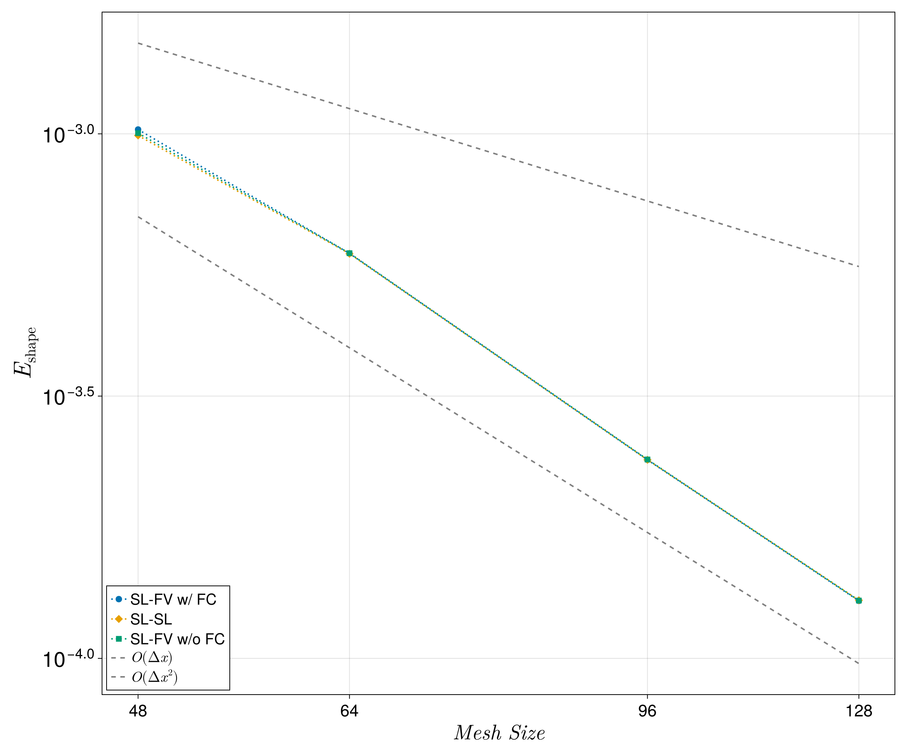
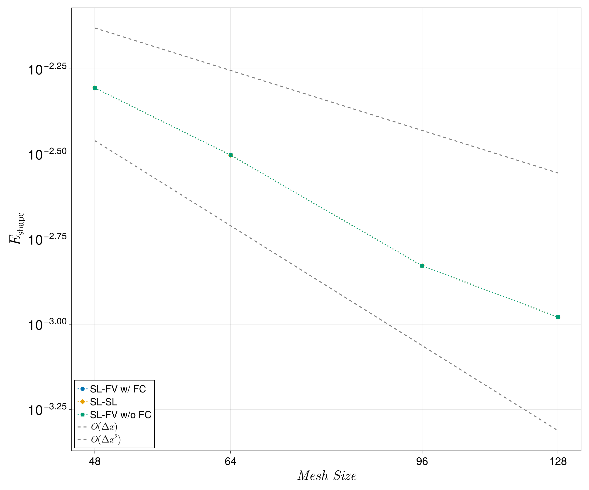
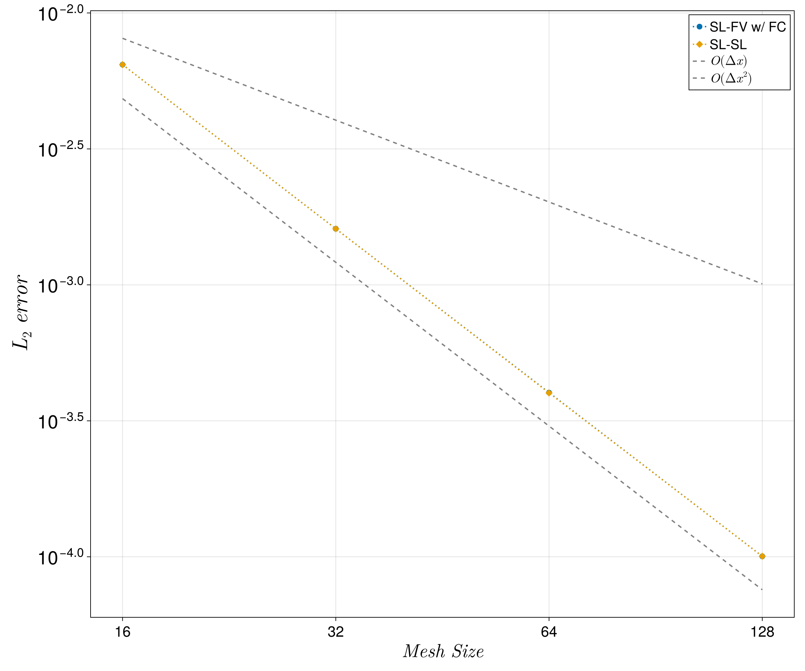
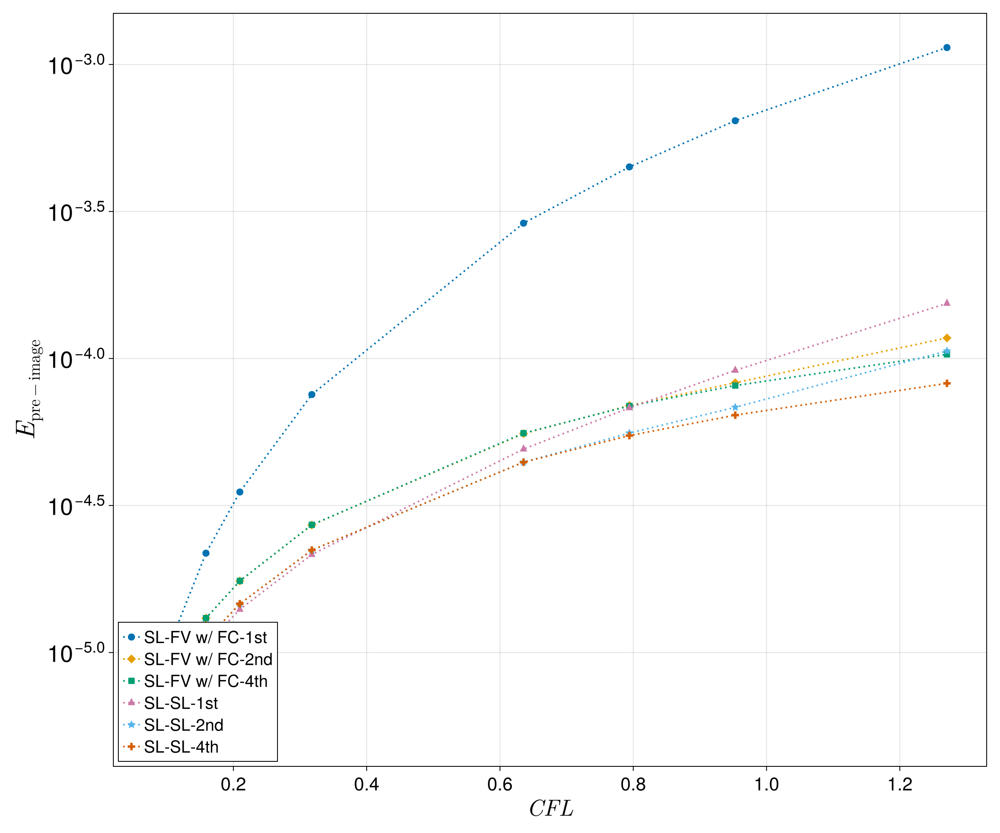

Verification
This section contains reproducible verification and validation performed using Mist.jl.
Manuscript 1 verification
The scripts outlined below can be ran and will produce the plots present within the publication<insert publication>. An in-depth description of the test scripts used for each result are linked to their corresponding documentation.
Data Pipeline
The three following test suites all use the same data generation and plotting visualization pipelines. The first script that is ran for each test is the runner script (E.g. advection runner). In general, the script will produce a CSV file that is then used to produce the corresponding plot using make_plots.jl.
Figure Reproduction
The CSVs containing the various error metrics are committed to the repository, so every figure can be rebuilt without running the solver:
julia --project=. papers/paper1/make_plots.jlThis takes seconds and writes every PNG to papers/paper1/figures/. Pass a name (deformation, zalesak, mms, preimage) to build just one.
To regenerate the underlying data as well, run the case script first. Each one writes its own CSV, which make_plots.jl then reads:
| Result | Command | Writes |
|---|---|---|
| 2D deformation | julia --project=. papers/paper1/advection_tests.jl deformation | data/deformation_errors.csv |
| Zalesak disk | julia --project=. papers/paper1/advection_tests.jl zalesak | data/zalesak_errors.csv |
| Pressure MMS | julia --project=. papers/paper1/mms_test.jl | data/mms_errors.csv |
| Pre-image error | julia --project=. papers/paper1/pre_image_test.jl | data/preimage_errors.csv |
| All figures | julia --project=. papers/paper1/make_plots.jl | figures/*.png |
Paths are relative to the repository root, and all outputs land under papers/paper1/.
The two advection sweeps are the expensive entries — each runs the solver once per scheme variant at every mesh resolution. The MMS and pre-image sweeps are comparatively short. Completed runs are detected and skipped, so an interrupted advection sweep resumes simply by reissuing the same command.
Interface advection test cases
This evaluates the ability of the solver to advect the volume fraction throughout the domain.
The convergence plot for the deformation test case:
plot_advection("deformation")
The convergence plot for the Zalesak test case:
plot_advection("zalesak")
Method of manufactured solutions for the pressure sovler
The method of manufactured solutions is used to evaluate the order of accuracy of the pressure solver under both the finite-difference or semi-lagrangian discretizations.
The error plot for the MMS:
plot_mms()
Pre-image error test case
To test the differences between the pre-images constructed with the SL-SL and the SL-FV scheme, an exact pre-image is constructed and a error metric between numerical pre-image and the exact pre-image is used to quantify the difference in accuracy between the two schemes.
The error plot for the pre-image test case: The convergence plot for the deformation test case:
plot_preimage()